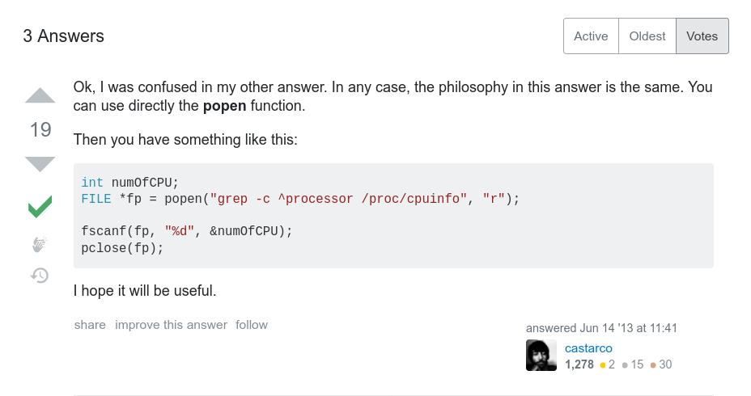

Daskom 1337
Lebih dekat dengan dia Command Line Interface
- By FAI -
- By FAI -
Code fun fact (C)
#include <stdio.h>
void main() {
char x[11];
scanf("%[^\n]", &x);
// misal input = daskom1337
printf("%s", x);
}
// daskom1337
scanf bisa juga menjadi pengganti gets dengan menggunakan syntax seperti regex didalamnya
Apa itu CLI ?
CLI adalah Command Line Interface yang berarti sebuah antarmuka yang hanya berisi angka dan huruf tanpa adanya grafis sama sekali
Mengapa CLI itu penting ?
- Mempercepat pekerjaan sehari hari
- Mouseless (ga perlu tetikus)
- Mempercepat kecepatan ngetik :v
- Apa apa gapake ribet
- Berasa hacker ¯\_(ツ)_/¯
- And so much more ...
(look at the fact that it use much over many)
Basic commands
ls ; cd ; mkdir ; nano ; find ; grep ; cat ; mv ; cp
- ls = list semua (file dan direktori) pada direktori saat ini
- cd = pindah dari direktori saat ini
- mkdir = membuat direktori
- nano = membuat file
- find = mencari file
- grep = mencari sesuatu yang mirip dengan sesuatu didalam file
- cat = meng-outputkan konten pada file
- mv = memindahkan file
- cat = meng-copy file
Usefull commands
man ; less ; awk ; curl ; wget ; ps ; head ; tail
- man = membaca panduan mengenai sebuah command
- less = membaca file
- awk = bahasa pemrograman yang bisa digunakan langsung pada shell
- curl = mengakses konten pada internet
- wget = mendownload file pada internet
- ps = meng-outputkan semua proses yang sedang berjalan
- head = meng-outputkan konten file (memotong dari awal)
- tail = meng-outputkan konten file (memotong dari akhir)
Dan ada sangat banyaaaaak sekali command lainnya
(And as one said, you only need a 'man' to know everything)
(And as one said, you only need a 'man' to know everything)
Sedikit tips
| (piping)
> (output redirection)
< (input redirection)
&& (and)
|| (else)
GIT + CLI = Black Magic
Keajaiban adalah suatu hal yang terjadi tapi tidak terlihat
Contoh kali ini
- Clone repository googler (Command untuk menggunakan search engine google melalui CLI)
- Gunakan command googler untuk mencari daskomlab dan hanya mengoutputkan pencarian paling atas
- Gunakan grep untuk mengecek output apakah berisikan daskomlab
- Jika outputnya berisikan daskomlab maka tulis 'daskom number one, even in google' kedalam log.txt jika tidak tulis 'daskom stil number one in my heart'
- Hapus kembali direktori googler nya
- Baca log.txt
- Magic just happened ...
git clone https://github.com/jarun/googler.git \
; ./googler/googler --np -n 1 daskomlab \
| (grep -q 'daskom' \
&& echo 'daskom number one, even in google' > log.txt \
|| echo 'daskom still number one in my heart' > log.txt) \
; rm -rf googler \
; cat log.txt

Shell Automation using C

Semuanya berkat stack-overflow, yang selanjutnya membawa saya kepada website bagus
(https://rosettacode.org/wiki/Get_system_command_output#C)
Semuanya berkat stack-overflow, yang selanjutnya membawa saya kepada website bagus
(https://rosettacode.org/wiki/Get_system_command_output#C)
Jadi pada automasi kali ini kita akan membuat sebuah automasi yang bisa melihat jawaban TP praktikan dan bisa menjalankannya
T H A N K S